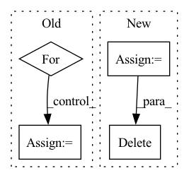

Pattern ID :28379

Before Change
train_losses_this_epoch.append(float(grad_accum[-1]))
if len(grad_accum) % gradient_accumulation == 0:
train_loss = 0.0
for accum_loss in grad_accum:
train_loss += accum_loss
train_loss /= len(grad_accum)
grad_accum = list()
optimizer.zero_grad()
After Change
optimizer.zero_grad()
train_losses_this_epoch = list()
for train_datapoint in train_loader:
train_loss = net(train_datapoint[0].to(device),
train_datapoint[1].to(device),
train_datapoint[2].to(device),
train_datapoint[3].to(device))
train_losses_this_epoch.append(float(train_loss))
(train_loss / gradient_accumulation).backward()
del train_loss
grad_accum += 1
if grad_accum % gradient_accumulation == 0:
grad_accum = 0
step_counter += 1
In pattern: SUPERPATTERN
Frequency: 3
Non-data size: 4
Instances
Fragment ID: 83715353
Project Name: digitalphonetics/ims-toucan
Commit Name: b3a6d9d487ef8387f96cc83cf6d4a4e51077d88c
Time: 2021-02-24
Author: florian.lux@ims.uni-stuttgart.de
File Name: PipelineTransformerTTS_CSS10.py
M Class Name: AnonimousClass
N Class Name: AnonimousClass
M Method Name: train_loop(9)
N Method Name: train_loop(9)
M Parent Class:
N Parent Class:
M File Name: PipelineTransformerTTS_CSS10.py
N File Name: PipelineTransformerTTS_CSS10.py
M Start Line: 93
M End Line: 108
N Start Line: 93
N End Line: 106
'>
Before Change
matching_matrix[pppppp] = mmm
print()
// 对每个gt，取cost最小的k个候选正样本去学习。
for gt_idx in range(num_gt):
_, pos_idx = torch.topk(cost[gt_idx], k=dynamic_ks[gt_idx], largest=False)
matching_matrix[gt_idx][pos_idx] = 1
del topk_ious, dynamic_ks, pos_idx
After Change
_, pos_idx = torch.topk(cost, k=max_k, largest=False)
M = cost.shape[1]
offset = torch.arange(start=0, end=M*num_gt, step=M, dtype=torch.int64, device=cost.device).unsqueeze(-1)
pos_idx_1d = (pos_idx + offset).flatten()
matching_matrix = matching_matrix.flatten()
matching_matrix[pos_idx_1d] = fill_value.flatten()
matching_matrix = matching_matrix.reshape(cost.shape)
del topk_ious, dynamic_ks, max_k, masks, fill_value, pos_idx, offset, pos_idx_1d
// [M, ] M个候选正样本匹配的gt数
anchor_matching_gt = matching_matrix.sum(0)
// deal with the case that one anchor matches multiple ground-truths
'>
Fragment ID: 83715352
Project Name: miemie2013/miemiedetection
Commit Name: 43dd136f727776fe4f3474de2de9675c0617c409
Time: 2023-05-08
Author: 53960695+miemie2013@users.noreply.github.com
File Name: test_code/test2_YOLOX_simota_matching.py
M Class Name: AnonimousClass
N Class Name: AnonimousClass
M Method Name: simota_matching2(3)
N Method Name: simota_matching2(3)
M Parent Class:
N Parent Class:
M File Name: test_code/test2_YOLOX_simota_matching.py
N File Name: test_code/test2_YOLOX_simota_matching.py
M Start Line: 52
M End Line: 89
N Start Line: 52
N End Line: 69
'>
Before Change
def _trocr(self, image):
generated_text = ""
img = image.copy()
for box in text_boxes(image):
x,y,w,h = box
rect = cv2.rectangle(im2, (x, y), (x + w, y + h), (0, 255, 0), 2)
cropped = im2[y:y + h, x:x + w]
pixel_values = self.processor(images=cropped, return_tensors="pt").pixel_values
generated_ids = self.model.generate(pixel_values)
del pixel_values
After Change
//generated_text = ""
img = np.asarray(image.copy())
//crops = np.array([])
crops = []
print("> Cropping page into lines")
for box in tqdm(text_boxes(image)):
x,y,w,h = box
rect = cv2.rectangle(img, (x, y), (x + w, y + h), (0, 255, 0), 2)
crops.append(Image.fromarray(img[y:y + h, x:x + w]).convert("RGB"))
print("> Done Cropping")
print("> Running TrOCR")
pixel_values = self.processor(images=crops, return_tensors="pt").pixel_values
print("| > loaded pixels")
del crops
del img
generated_ids = self.model.generate(pixel_values)
print("| > generated tokens")
del pixel_values
'>
Fragment ID: 83715354
Project Name: cypherousskies/reading-for-listeners
Commit Name: f9df6b3112187a0c2ae890489418e9c98598d3eb
Time: 2022-03-09
Author: 5472563+CypherousSkies@users.noreply.github.com
File Name: reading4listeners/util/ocr.py
M Class Name: TrOCR
N Class Name: TrOCR
M Method Name: _trocr(2)
N Method Name: _trocr(2)
M Parent Class:
N Parent Class:
M File Name: reading4listeners/util/ocr.py
N File Name: reading4listeners/util/ocr.py
M Start Line: 79
M End Line: 90
N Start Line: 82
N End Line: 102